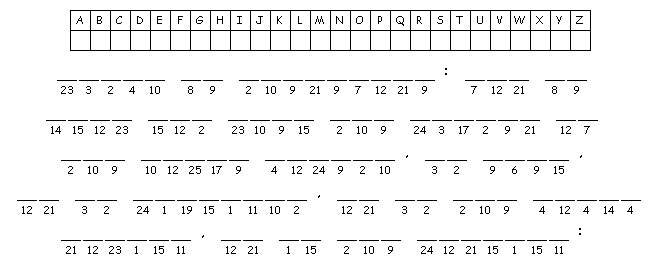
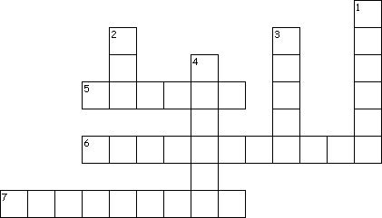

This week's lessons: Isaiah 64:1-9, Psalm 80:1-7, 17-19, 1 Corinthians 1:3-9, Mark 13:24-37
This
week's lessons: Isaiah
64:1-9, Psalm
80:1-7, 17-19, 1
Corinthians 1:3-9, Mark
13:24-37
Middle-School Pew-work
If you had a hunch that Jesus would "return" this Christmas – what might you do differently? _________________________________________________________________________ _________________________________________________________________________ _________________________________________________________________________ _________________________________________________________________________ _________________________________________________________________________ _________________________________________________________________________ _________________________________________________________________________
|
Image from http://www.first-school.ws |
 |
|
|
 |
Across 5. And then shall he send his ____ 6. after that _____ 7. from the ____ part of the earth Down 1. And the stars of ____ shall fall 2. And then shall they see the ____ of man 3. and shall gather together his ____ 4. coming in the ____ with great power |
|
Next week's lessons: Isaiah 40:1-11, Psalm 85:1-2, 8-13, 2 Peter 3:8-15a, Mark 1:1-8